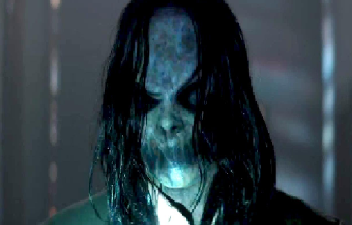

The film opens with a family being hung up like scarecrows in a corn field and burned alive. It is revealed to be a nightmare that nine-year-old Dylan Collins (Robert Daniel Sloan) is suffering from. The following day, Dylan, his twin brother Zach, and their mother Courtney (Shannyn Sossamon) are out shopping. Courtney notices a man spying on her, and they flee the market, returning to the rural farmhouse where they are currently staying.
Dylan, suffering from nightmares, is visited nightly by a group of ghostly children, led by a boy named Milo, who bring him into the basement and force him to watch Super 8 footage of families being savagely murdered; these include a family being eaten by alligators, another being electrocuted in a flooded kitchen, and one being buried alive in the snow on Christmas Day. Meanwhile, the Deputy from the first film, who investigated the Ellison Oswalt case, is independently researching the murders connected to Bughuul, and is burning down the homes where each murder took place before another family can move into them. He arrives at the farmhouse to destroy it, but is interrupted when he realizes Courtney and her sons are living there. He tells Courtney he is a private investigator, and she initially mistakes him for an investigator sent by her abusive husband from whom she has fled. She allows him to return to the house the next day to investigate an abandoned church on the property where a gruesome murder took place, which Courtney has converted into a makeshift furniture restoration workshop.
That afternoon, Courtney's husband Clint arrives with two state troopers, threatening to take the boys. The deputy confronts the troopers. It turns out they do not have the appropriate custody warrants which can only be handled by the county sheriff, and they leave with Clint, frustrated. Courtney invites the deputy to stay at the farmhouse, and the two develop a budding romantic interest in one another. Meanwhile, Zach becomes increasingly jealous of the ghostly children who visit Dylan, and insists on having their attention. They show Dylan the video of the murders which took place in the church, in which a family is nailed, by the wrists and feet, to the floor; with rats placed on their abdomens, and covered with communion goblets which are heated with hot coals, forcing the rats to eat their way through each person's abdomen to escape. Dylan refuses to watch another video with Milo and the other children, so they turn their attention to Zach to carry out the family's murder (which was their plan all along, since the idea was to make Zach jealous, pushing him to the brink of falling into Bughuul).
The deputy advises Courtney not to leave the farmhouse so as not to appear as a flight risk in her custody battle. However, his actual motive for the advice is to prevent a massacre of the family from taking place—each of the murders connected to Bughuul occurred only after the families had fled the homes where the previous murders had occurred. The deputy goes to meet with a professor who has come into possession of a ham radio that belonged to Professor Jonas from the previous film who was in contact with Ellison Oswalt and has also mysteriously disappeared. The radio picks up bizarre frequencies that are connected to former murders at Bughuul's helm. At the farmhouse, Clint arrives with proper custody warrants and the sheriff, and Courtney is coerced into leaving with Zach and Dylan.
After finding the farmhouse empty that night, the deputy drives to Clint's home to warn them about the danger they are in, but Clint threatens him with a shotgun and assaults him. The next day, Courtney is sitting with Dylan and Clint outside their new house, while Zach, as directed by Milo and the other children, films them from afar with a Super 8 camera. After realizing he and his family has been poisoned, Dylan steals Courtney's mobile phone and text messages the deputy, asking for help.
That evening, Courtney, Dylan, and Clint are hung on scarecrow posts in the cornfield. Zach lights Clint on fire and films him as he burns to death. The deputy arrives at the house, and drives into the cornfield, hitting Zach with his car, injuring him but not killing him. He cuts Courtney and Dylan down from the posts, and they flee into the house. Zach pursues them with the camera, armed with a sickle. The ghost children, who are invisible to Courtney and the deputy, move furniture around the house and throw objects as they search for them with Zach. The deputy manages to break the camera, overexposing the film, and thwarting Zach's home movie, which breaks the cycle.
As he searches for another camera, Zach is taken by Bughuul while the other ghost children admonish him for his failure to carry out the killings. The house then catches fire, and Courtney, Dylan, and the deputy escape as it burns to the ground. They return to town, where the deputy goes to his motel room to gather his things. Before he is about to leave, the ham radio from earlier suddenly appears, emitting noises before Bughuul appears in front of the camera.
